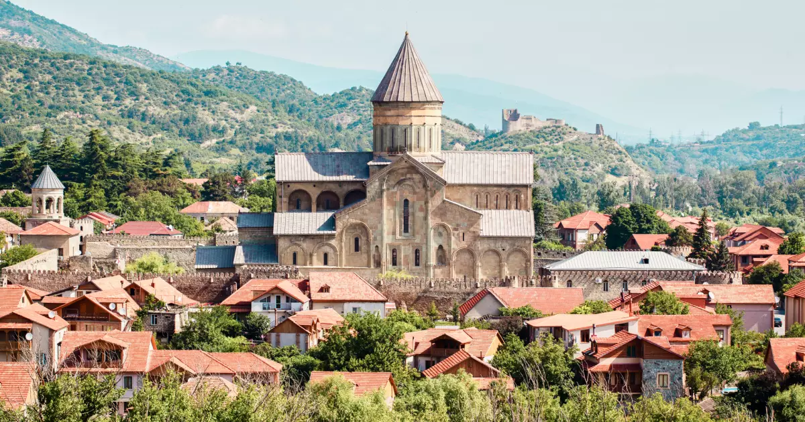

Почему стоит посетить Грузию
Несмотря на свои небольшие размеры, в Грузии есть все виды ландшафтов, включая пустыни, побережья и горы. Страна является раем для любителей пеших прогулок и кемпинга. Вы также можете исследовать захватывающие дух озера, каньоны, водопады или расслабиться на спа-курортах.
Изучите главные достопримечательности
Посмотреть все-

Светицховели
Культурные памятники Читать далее -
Национальный парк Боржоми-Харагаули
Чудеса природы Читать далее -

Гергетская Троицкая церковь
Культурные памятники Читать далее -
Озера Абудераули
Чудеса природы Читать далее -

Дариельский монастырь
Культурные памятники Читать далее -

Каньон Окаце
Чудеса природы Читать далее
Кухня, которая вас удивит
Традиционная грузинская кухня сочетает в себе свежее мясо, свежие овощи, травы и специи, создавая отчетливо ароматные блюда, которые считаются одними из самых полезных в мире. Что делает грузинскую кухню такой невероятно вкусной и вкусной, так это ароматы. У вас есть ароматы Средиземноморья, а также Турции и Ближнего Востока. Наиболее распространенными ингредиентами являются грецкие орехи, гранат, фасоль, сыр, мед, кориандр и чеснок.
Читать далееТрадиционная Грузинская Кухня
Вегетарианская грузинская кухня
Попробуйте всемирно известное грузинское вино
Отличительной чертой Грузии являются белые вина, которые месяцами остаются в контакте с кожицей, стеблями и косточками, а затем ферментируются в огромных глиняных амфорах (квеври), закопанных в землю. Эта практика используется во всем мире, но ее глубокие корни уходят в грузинскую культуру. Уникальность грузинского вина заключается в секрете процесса его изготовления, который восходит к древним временам. В отличие от большинства вин Старого Света, грузины не используют дубовые бочки для ферментации, хранения или выдержки своих вин. Фактически, самые старые свидетельства виноделия указывают на использование «квеври».
Узнать большеПольза для здоровья при поездке в Грузию
Грузия хорошо известна своей пользой для здоровья, в том числе географическим расположением, таким как целебные магнитные пески и курорты в горах, а также различные клиники, заполненные профессиональными работниками здравоохранения. Приезд в Грузию имеет множество преимуществ как для физического, так и для психического благополучия.
Узнать больше

Свяжитесь с нами
Позвольте нам помочь вам в планировании вашего оздоровительного и развлекательного тура по Грузии. Свяжитесь с нами через:
- Электронная почта:
- Номер телефона:
- Социальные сети: